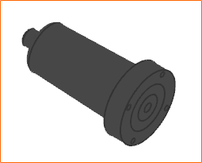
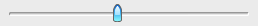

Use the Basic Lights command to add ambient light or directional lights in the work view.
You can control the intensity of the lights using the Scene Dimmer option.
|
 |
|
 |
|
Tip |
You can also modify the color of each scene light using the Advanced Lights command. |
|
Application |
Gateway |
|
Toolbar |
Visualization→Basic Lights |
|
Menu |
View→Visualization→Basic Lights |